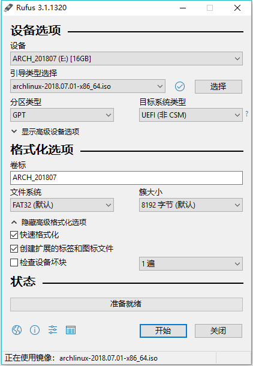

最近新买了 ThinkPad X1C，顺便又买了块 SSD （ 东芝 RC100 2242 规格，PCIe/NVMe）来装 ArchlLinux，尽管是咱第二次装 ArchLinux，还是遇到了不少坑，因此根据 ArchWiki 和网上的几篇博客整理了一篇可以让各位 friends 都能上手的安装教程。
教各位friend安装ArchLinux
制作启动U盘
由于咱是在 windows 上做的安装介质（也是多数 friends 的情况），所以在此就只针对 windows 系统给出说明，其他平台可以参考 ArchWiki。
windows 上咱使用 rufus 来制作U盘驱动器，rufus也是 ArchLinux 官方推荐的哦。
当然制作之前要先下载 archlinux，friend 可以自己选择源来下载，咱是直接用了 ustc 源 ，rufus 的具体设置如图：

注意：目前的引导方式主要分为 EFI 引导 + GPT 分区表 与 BIOS(LEGACY) 引导 + MBR 分区表 两种，几乎比较新的机器都采用了EFI/GPT引导的方式（也是咱选择的方式）。
安装U盘制作完成后，插入电脑，调整硬盘的启动顺序从U盘启动 ArchLinux。
拿咱的 ThinkPad X1C 具体举例，ThinkPad X1C 还需要在 BIOS 里将 Security Boot 选项设置为 Disabled，然后在 Startup 栏把 UEFI/Legacy Boot 选项设置为 Both / UEFI First / Yes。这样才能调整启动顺序从U盘启动 ArchLinux 系统。
如果 friend 不确定自己的引导方式，U盘启动成功后请在命令提示符下执行以下命令：
1 | ls /sys/firmware/efi/efivars |
如果提示
1 | ls: cannot access '/sys/firmware/efi/efivars': No such file or directory |
表明 friend 是BIOS方式引导，否则为EFI方式引导。
硬盘分区和系统挂载
咱是直接使用 fdisk 命令来进行分区的，fdisk 命令自带有简洁说明，对命令内容还有问题的 friend 可以问问搜索引擎。
这是咱的分区结果（东芝那块 SSD 就是nvme1n1），总共分了三个 partition，都是 GPT 格式的：
1 | /dev/nvme1n1p1 512M EFI System |
分完区后需要格式化：
1 | # EFI |
格式化完分区后需要挂载：
1 | # 首先需要挂载根分区 |
执行 lsblk 看看是否都挂载成功。
选择镜像
备份一份 mirrorlist， 并修改 mirrorlist，只留下China的镜像源：
1 | cp /etc/pacman.d/mirrorlist /etc/pacman.d/mirrorlist.backup |
安装基本系统
1 | pacstrap -i /mnt base base-devel |
配置Fstab
1 | genfstab -U /mnt >> /mnt/etc/fstab |
强烈建议 在执行完以上命令后，后检查一下生成的 /mnt/etc/fstab 文件是否正确。
Chroot (Change root)
chroot 命令相当于把操纵权交给新安装（或已经存在）的Linux系统。
之前的所有操作都是在U盘里的，而执行了这步以后，操作都相当于在磁盘上新装的系统中进行。
1 | arch-chroot /mnt |
注意: 如果以后系统出现了问题，只要插入U盘并启动，将系统根分区挂载到了/mnt下（如果有其他分区也要之前那样挂载到相应目录下），再通过这条命令就可以进入系统进行修复操作。
设置时区
1 | ln -sf /usr/share/zoneinfo/Asia/Shanghai /etc/localtime |
date 命令用于查看时间，如果时间有问题， friend 可以直接手动设置时间并同步到硬件时钟里：
1 | date -s MM/DD/YYYY |
连接网络
ArchLinux 并不能离线安装，因此需要联网来下载需要的组件。
有线网并且路由器支持DHCP的话插上网线后先执行以下命令获取IP地址：
1
dhcpcd
由于咱是笔记本也没网线，就使用无线网：
1
wifi-menu
连上之后测试下网络
1 | ping -c 3 www.baidu.com |
提前安装必须软件包
Chroot 到了新的系统中，只有一些最基本的包（组件），特别是 wifi-menu 是需要下面其中一些包的。
1 | pacman -S vim dialog wpa_supplicant ntfs-3g networkmanager |
设置Locale
/etc/locale.gen 是一个仅包含注释文档的文本文件。
指定 friend 需要的本地化类型，只需移除对应行前面的注释符号（＃）即可，建议选择 UTF-8的项：
1 | vim /etc/locale.gen |
咱的话只要英文和简体中文
1 | en_US.UTF-8 UTF-8 |
接着执行 locale-gen 以生成 locale 讯息：
1 | locale-gen |
/etc/locale.gen 会生成指定的本地化文件.
打开（不存在时会创建）/etc/locale.conf文件：
1 | vim /etc/locale.conf |
在文件的第一行加入以下内容：
1 | LANG=en_US.UTF-8 |
警告: 不推荐在此设置任何中文locale，或导致tty乱码。
设置主机名
打开（不存在时会创建）/etc/hostname文件：
1 | vim /etc/hostname |
在文件的第一行输入 friend 自己设定的一个 hostname，咱用的是tp-arch，保存并退出。
编辑/etc/hosts文件：
1 | vim /etc/hosts |
作如下修改（将 tp-arch 替换成 friend 自己设定的主机名）：
1 | 127.0.0.1 localhost.localdomain localhost |
设置 root 密码
执行如下命令：
1 | passwd |
按提示设置并确认就可以了。
安装Intel-ucode（非IntelCPU可以跳过此步骤）
直接pacman安装：
1 | pacman -S intel-ucode |
安装Bootloader, 这里咱安装最流行的Grub2。
首先安装os-prober这个包，它可以配合Grub检测已经存在的系统，自动设置启动选项。
1 | pacman -S os-prober |
安装引导程序
由于咱的电脑是EFI/GPT引导方式，所以安装 grub 与 efibootmgr 两个包：
1 | pacman -S grub efibootmgr |
部署grub：
1 | grub-install --target=x86_64-efi --efi-directory=/boot --bootloader-id=grub |
生成配置文件：
1 | grub-mkconfig -o /boot/grub/grub.cfg |
如果 friend 发现错误，请仔细检查是否正确完成上面的过程。
如果报 warning failed to connect to lvmetad，falling back to device scanning. 错误，简单的方法是编辑 /etc/lvm/lvm.conf 这个文件，搜索到 use_lvmetad = 1 将 1 修改为 0，保存，再重新配置 grub 即可。
安装后检查
如果 friend 是多系统（咱是在一块全新 SSD 上装的 ArchLinux），请注意上面一节中对 os-prober 这个包的安装。
强烈建议使用如下命令检查是否成功生成各系统的入口，如果没有正常生成会出现开机没有系统入口的情况：
1 | vim /boot/grub/grub.cfg |
检查接近末尾的 menuentry 部分是否有 windows 或其他系统名入口。
由于咱是新的 SSD 所以没有这种烦恼。
重启
输入 exit 或按 Ctrl+D 退出 chroot 环境。
最后，通过执行 reboot 重启系统，systemd 将自动卸载仍然挂载的任何分区。
注意这个时候 friend 可能会卡在有两行提示的地方无法正常关机，长按电源键强制关机即可，没有影响。
关机后拔出U盘，调整硬盘启动顺序，如果一切顺利就能进入系统，然后使用 root 帐户登录到新系统。
好了，是成功安装了 ArchLinux 的 friend了！
安装完 ArchLinux 后的基础配置
还是要连接网络
1 | # 有线网并且路由器支持DHCP的话插上网线后先执行以下命令获取IP地址 |
同样可以使用ping命令来测试是否正常联网。
1 | ping -c 3 www.baidu.com |
新建用户和用户组
创建一个名为 xxx 的用户（xxx 为 friend 自己的用户名），并使用 zsh 作默认 shell。
在此之前，请不要忘记安装zsh：
1 | pacman -S zsh |
并为所创建用户 xxx 设定密码：
1 | passwd xxx |
权限提升，配置sudo
sudo本身也是一个软件包，所以咱需要通过pacman来安装：
1 | pacman -S sudo |
用专门的 visudo 命令来编辑 sudo 的配置文件，使用 visudo 是为了对编辑后的文件进行检查防止格式的错误：
1 | visudo # 实际上就是 vim 的操作 |
找到
1 | %wheel ALL=(ALL)ALL |
这行，去掉之前的 # 注释符，保存并退出就可以了。
这里的 %wheel 就是代表 wheel 用户组，意味着 wheel 用户组中的所有用户都可以使用 sudo 命令。当然为了安全使用 sudo 命令，wheel 用户组中的所有用户还是需要输入当前用户的密码来进行提权操作。
配置好 sudo 以后，咱进行一次重启，执行：
1 | reboot |
重启以后输入 friend 刚创建的用户名与密码来登录。注意登录后还是要重新进行联网操作。
图形界面安装
显卡驱动
咱的电脑是intel的集成显卡（绝大多数人的情况，其他情况请看 ArchWiki：
1 | sudo pacman -S xf86-video-intel |
安装 Xorg 及相关组件:
1 | sudo pacman -S xorg |
安装桌面环境
Linux下有很多著名的桌面环境如Xfce、KDE(Plasma)、Gnome、Unity、Deepin等等，它们的外观、操作、设计理念等各方面都有所不同， 在它们之间的比较与选择网上有很多的资料可以去查。
咱本人只用过 Gnome 和 Deepin 的，也正打算用用 i3wm。
当然 friend 可以把它们全部装上换着用……因为 Linux 的模块化，这样完全没有问题。
1 | # gnome桌面和 gnome 组件 |
提前配置网络
到现在已经安装好了桌面环境，但是还有一件事情需要提前设置一下。
由于之前使用的一直都是 netctl 这个自带的网络服务，而桌面环境使用的是 NetworkManager 这个网络服务，所以需要禁用 netctl 并启用NetworkManager：
1 | sudo systemctl disable netctl |
重新启动后，如果 friend 看到桌面管理器的界面，选择 friend 需要的桌面环境并输入用户名与密码登陆后，就能看到 Gnome 桌面了。
好了，是能用桌面系统的 friend 了。
推荐的包
yaourt
最简单安装 Yaourt 的方式是添加 Yaourt 源至 friend 的 /etc/pacman.conf，在文件最后加入:
1 | [archlinuxcn] |
然后
1 | sudo pacman -Syu yaourt |
中文字体与中文输入法
Fcitx (简体中文))
1 | sudo pacman -S wqy-microhei |
记得在 Gnome Settings - Region & Language - Input Sources 选项中加入中文.
fcitx 输入法
1 | sudo pacman -S fcitx-im fcitx-configtool |
使用 fcitx 之前，friend 必须先进行一些环境设定。
如果 friend 采用 KDM、GDM、LightDM 等显示管理器，请在~/.xprofile (没有则新建一个)中加入如下3行，
如果 friend 采用 startx 或者 Slim 启动 （即使用.xinitrc的场合），则在 ~/.xinitrc 中加入，
如果 friend 使用的是较新版本的GNOME，使用 Wayland 显示管理器，则请在/etc/environment中加入：`
1 | export XMODIFIERS=@im=fcitx |
重新登录后让环境变量生效。
fcitx-diagnose 命令通常能告诉 friend： 有关 fcitx 的配置是否有问题。
安装中文输入法（咱装的是sogoupinyin）
1 | sudo pacman -S fcitx-sogoupinyin |
打开配置工具 fcitx-configtool 添加中文输入法。
对于新安装的英文系统，要取消只显示当前语言的输入法（Only Show Current Language），才能看到和添加中文输入法(Pinyin, SogouPinyin等)。
输入法部分常用默认快捷键：
- Ctrl + Space 激活输入法
- 左Shift 临时切换到英文
- Ctrl + Shift 输入法间切换
浏览器 Google Chrome or Firefox
前面已经加入了archlinuxcn，这里只要
1 | sudo pacman -S google-chrome |
oh-my-zsh 配置
前提是已经装了 zsh，并切换了当前的 shell 到 zsh。
1 | sudo pacman -S git |
图标包和主题
图标包
1
yaourt -S numix-circle-icon-theme-git
主题
1
yauort -S adapta-gtk-theme
再到 tweak-tool 里设置就行了，friend 当然也可以选择其他图标包和主题啦。
ShadowsocksR 客户端
这里是用的 python 版本的，其他版本请移步 github。
当然使用客户端的前提是已经部署了服务端，相信爱折腾的 friend 应该早已经做啦。
1 | git clone https://github.com/shadowsocksr-backup/shadowsocksr.git |
当然除了 ShadowsocksR 之外还有其他工具，比如 Shadowsocks，v2ray，就看 friend 哪个用的顺手啦
SwitchyOmega 浏览器插件
链接里 chrome 和 firecfox 的版本都有
这里就讲一下在 chrome 上的安装吧。下载完 SwitchyOmega-xxx.crx 文件， 把后缀名改成 .zip 再解压得到需要的文件夹。
1 | sudo pacman -S unzip |
然后在 chrome 的扩展界面打开开发者模式，导入这个文件夹。
SwitchyOmega 的配置也很简单，打开该插件的选项。
Profiles - proxy:
1 | # Protocol Server Port |
Profiles - auto switch:
1 | # Condition Profile |
Rule list config:
1 | Rule List Format - AutoProxy |
最后别忘了保存选项哦。
好了，是能用浏览器连上股♂沟的 friend 了。
Friend 还能用 yaourt 装其他各种各样的包哦
好用得呀匹